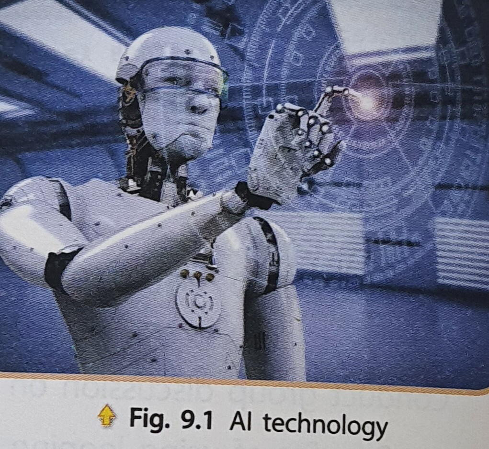
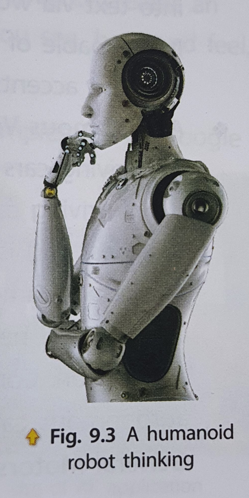

Artificial Intelligence

Artificial Intelligence (AI) is a branch of computer science. It aims to create intelligent machines that think, work, and react like human beings. In other words, Al is a replication of human intelligence, which is processed by machines, especially computer systems. Al is in use everywhere today, from smartphones to cars, to home, and even banking establishment, and so on.
Applications of Artificial Intelligence (AI)
Education: Al has brought in a major revolution in education sector by providing easy access to educational resources through smart devices and computers. With the automation of administrative tasks, the institutions have been able to significantly cut down on the time spent on completing difficult tasks, thus enabling educators to devote more time to students.
- Gaming: The gaming industry was probably one of the first to adopt Artificial Intelligence. Al plays a crucial role in strategic games, such as ludo, chess, poker, tic-tac-toe, and so on where a machine must think about a large number of possible positions based on computing knowledge. Al holds the key to improving the way characters, and environments are expressed in a game, thus enhancing the overall gaming experience.

- Intelligent Robots: Robots can perform the tasks given by a human being. Robots are excellent at simple, precise, and repetitive tasks. This makes them suitable for manufacturing. Nowadays, 90 percent of robots work in manufacturing, and their use is increasing day-by-day. In 2010, manufacturers bought 121000 industrial robots. In 2015, they bought more than twice as many. As robots become more like humans, they have become more useful outside manufacturing as well.
Advances in Artificial Intelligence have made robots smarter. Engineers have designed robots that scan their environment. They can recognize and grasp objects. They can move over uneven terrain. Computer scientists are writing programs that allow robots to think and learn.